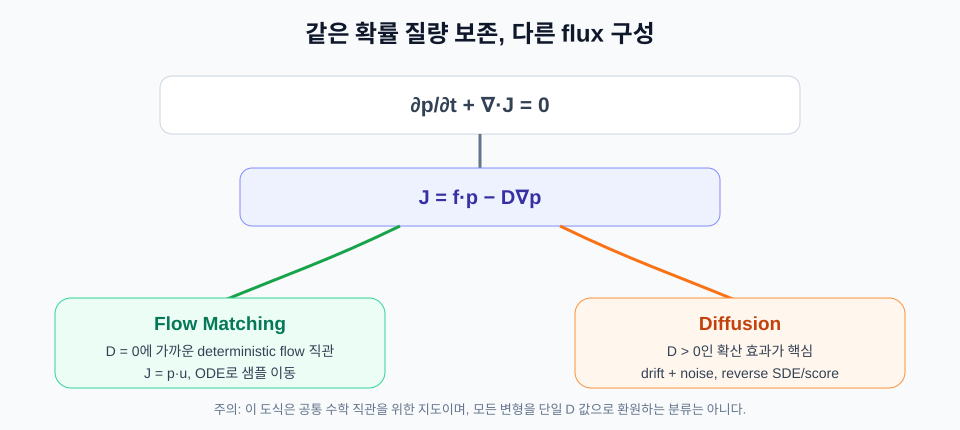
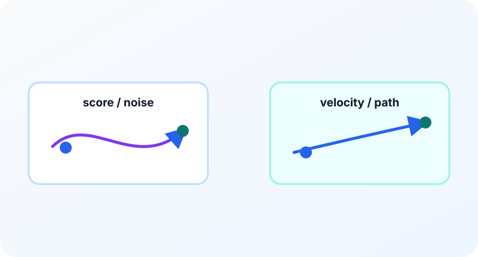

9장. Diffusion과 Flow Matching 비교¶
이 장의 질문¶
Diffusion과 Flow Matching은 둘 다 노이즈에서 데이터를 만드는 연속 시간 생성 모델처럼 보인다. 둘 다 시간 \(t\)를 쓰고, 중간 샘플을 만들고, 신경망이 어떤 벡터를 예측한다. 그렇다면 둘은 같은 방법의 다른 이름일까, 아니면 서로 다른 철학을 가진 방법일까?
이 장의 목적은 “어느 쪽이 더 좋다”를 정하는 것이 아니다. 대신 두 방법이 같은 문제를 어떤 언어로 표현하는지 비교한다. Diffusion을 먼저 배운 독자는 Flow Matching의 장점을 더 선명하게 볼 수 있고, Flow Matching을 먼저 배운 독자는 diffusion 논문에서 score, noise prediction, probability flow ODE(Ordinary Differential Equation, 상미분방정식)가 왜 등장하는지 이해할 수 있다.
공통점: 분포 사이를 잇는다¶
두 방법 모두 단순한 분포와 데이터 분포 사이의 관계를 다룬다.
생성 관점에서는 단순한 노이즈 분포에서 시작해 데이터 분포로 이동한다. 학습 관점에서는 데이터에 노이즈를 섞거나, 노이즈와 데이터를 연결하는 중간 상태를 만든다.
Diffusion에서는 보통 forward noising process를 정의한다.
여기서 \(x_1\)은 데이터, \(\epsilon\sim\mathcal{N}(0,I)\)는 노이즈다. 모델은 이 과정의 역방향을 학습한다.
Flow Matching에서도 비슷한 형태의 경로를 쓸 수 있다.
하지만 관심 대상은 역방향 노이즈 제거 그 자체가 아니라 이 경로를 따라 움직이는 속도다.
즉 두 방법은 비슷한 중간 샘플을 만들 수 있지만, 그 중간 샘플을 해석하는 방식이 다르다.
Diffusion의 중심 언어: score와 reverse dynamics¶
Diffusion model은 데이터에 점진적으로 노이즈를 더하는 forward process에서 시작한다. 연속 시간에서는 SDE(Stochastic Differential Equation, 확률미분방정식)로 표현할 수 있다.
여기서 \(dw\)는 브라운 운동의 미소 변화다. forward process는 데이터를 점점 노이즈로 만든다. 생성은 이 과정을 거꾸로 따라가야 하므로 reverse process가 필요하다.
reverse SDE에는 score가 등장한다.
score는 현재 위치 \(x\)에서 밀도가 증가하는 방향을 알려 준다. Diffusion 모델은 보통 noise prediction, score prediction, 또는 velocity prediction 형태로 이 정보를 학습한다.
대표적인 학습 목표 중 하나는 노이즈 예측이다.
이 식은 CFM(Conditional Flow Matching) loss와 겉모습이 비슷하다. 둘 다 MSE(Mean Squared Error, 평균제곱오차)다. 하지만 예측 대상이 다르다. Diffusion에서는 경로를 만드는 데 들어간 노이즈나 score 관련 값을 예측하고, Flow Matching에서는 경로의 속도를 예측한다.
Flow Matching의 중심 언어: velocity field¶
Flow Matching은 확률 경로 \(p_t\)와 속도장 \(u_t(x)\)에서 시작한다.
이 식은 분포가 속도장에 의해 이동한다는 관점을 명확히 보여 준다. 모델은 score가 아니라 velocity를 직접 맞춘다.
Conditional Flow Matching에서는 계산 가능한 조건부 속도를 목표로 쓴다.
이 관점에서는 생성이 자연스럽게 ODE(Ordinary Differential Equation, 상미분방정식) 적분이 된다.
Probability flow ODE가 연결고리다¶
Diffusion에도 ODE가 등장한다. 특정 SDE와 같은 marginal distribution을 갖는 probability flow ODE를 만들 수 있다. 즉 diffusion을 반드시 stochastic sampler로만 생성해야 하는 것은 아니다.
이 점 때문에 diffusion과 Flow Matching의 경계가 흐릿해 보일 수 있다. 둘 다 ODE를 쓸 수 있고, 둘 다 velocity parameterization을 쓸 수 있다. 하지만 출발점은 다르다.
Diffusion은 노이즈를 더하는 확률 과정과 그 역과정에서 출발한다. Flow Matching은 처음부터 확률 경로와 속도장을 정하고, 그 속도장을 맞추는 문제로 출발한다.
Gaussian probability path에서는 두 언어가 더 직접적으로 연결된다. 적절한 스케줄을 쓰면 marginal velocity field \(u_t(x)\)와 score function \(\nabla_x\log p_t(x)\)가 다음처럼 선형 관계를 갖는다.
정확한 \(a_t\), \(b_t\)는 path parameterization에 따라 달라진다. 여기서 중요한 점은 score와 velocity가 완전히 다른 정보가 아니라는 것이다. Diffusion은 같은 동역학을 score 또는 noise 쪽에서 parameterize하고, Flow Matching은 velocity 쪽에서 parameterize한다고 볼 수 있다.
따라서 다음처럼 정리할 수 있다.
| 질문 | Diffusion 관점 | Flow Matching 관점 |
|---|---|---|
| 중간 상태는 무엇인가? | 데이터에 노이즈가 섞인 상태 | 확률 경로 위의 샘플 |
| 모델은 무엇을 배우는가? | noise, score, 또는 velocity | velocity field |
| 생성은 어떻게 하는가? | reverse SDE(Stochastic Differential Equation, 확률미분방정식)/ODE sampler | ODE solver |
| 핵심 설계 변수는 무엇인가? | noise schedule, sampler | probability path, target velocity |
| 학습 직관은 무엇인가? | 노이즈 제거 | 분포 이동 속도 맞추기 |
Fokker-Planck 관점에서 보는 공통 뿌리¶
Diffusion과 Flow Matching은 겉으로는 매우 다른 학습법처럼 보인다. Diffusion은 noise, score, reverse SDE에서 출발하고, Flow Matching은 path, velocity, ODE에서 출발한다. 하지만 분포의 시간 변화를 쓰는 수학 언어로 내려오면 둘은 같은 뿌리를 공유한다.
먼저 확률 질량 보존은 flux \(J_t(x)\)로 다음처럼 쓸 수 있다.
Diffusion 계열에서는 이 flux를 drift와 diffusion 항으로 나누어 생각할 수 있다.
여기서 \(f_t(x)p_t(x)\)는 분포를 특정 방향으로 밀어 주는 drift flux이고, \(-D_t\nabla p_t(x)\)는 density가 높은 곳에서 낮은 곳으로 퍼지는 diffusion flux다. 이 관점에서 Diffusion은 \(D_t>0\)인 확산 효과를 적극적으로 사용한다. 개별 샘플 trajectory에는 noise가 들어가지만, 전체 density의 변화는 Fokker-Planck equation으로 결정론적으로 기술된다.
Flow Matching은 보통 deterministic velocity field를 중심으로 본다. 이때 flux는 다음처럼 읽을 수 있다.
즉 확산항 없이 velocity field가 확률 질량을 운반하는 Liouville equation 관점에 가깝다. 이 설명은 “확산항 \(D\)를 켜면 diffusion, 끄면 Flow Matching”이라는 좋은 직관을 준다. 다만 이것은 모든 Flow Matching 변형을 완전히 환원하는 엄밀한 분류라기보다, 두 방법의 공통 기반을 이해하기 위한 지도라고 보는 편이 안전하다.

이 관점을 더하면 비교표도 조금 달라진다.
| 항목 | Diffusion | Flow Matching |
|---|---|---|
| 분포 방정식 직관 | Fokker-Planck, drift + diffusion | continuity/Liouville, drift 또는 velocity 중심 |
| 개별 trajectory | stochastic path가 자연스럽다 | deterministic ODE path가 자연스럽다 |
| 학습 대상 | score, noise, velocity parameterization | velocity field 직접 회귀 |
| 생성 비용 직관 | 많은 denoising 또는 solver step | 경로가 곧으면 적은 ODE step 가능 |
| 공통 기반 | 확률 질량 보존과 시간별 density 변화 | 확률 질량 보존과 시간별 density 변화 |
어느 쪽이 더 쉽나¶
입문자에게 Flow Matching이 주는 장점은 개념의 일관성이다. 시작 분포, 목표 분포, 경로, 속도, ODE가 하나의 그림으로 이어진다. 특히 수학적으로는 연속 방정식과 벡터장을 중심으로 이해할 수 있다.
반면 diffusion은 score, SDE, reverse process, noise schedule, prediction parameterization이 함께 등장한다. 처음에는 복잡해 보이지만, 이미지 생성에서 매우 강력한 경험적 성과와 풍부한 구현 노하우가 있다.
따라서 학습 순서는 목적에 따라 다르다.
- 이미지 생성 구현을 빠르게 따라가고 싶다면 diffusion 자료가 풍부하다.
- 연속 생성 모델의 공통 구조를 이해하고 싶다면 Flow Matching이 좋은 언어가 된다.
- 최신 논문을 읽고 싶다면 두 관점을 모두 알아야 한다.
실무 관점의 차이¶
실무적으로는 다음 항목들이 중요하다.
첫째, 샘플링 비용이다. Flow Matching은 경로가 잘 설계되면 비교적 적은 ODE step으로 좋은 결과를 얻는 방향을 추구한다. Diffusion도 빠른 sampler가 많지만, sampler 설계가 별도의 큰 주제다.
둘째, 경로 설계의 자유도다. Flow Matching은 어떤 probability path를 쓰느냐가 방법의 성격을 크게 좌우한다. 이 자유도는 장점이지만, 잘못 선택하면 학습이 어려워질 수 있다.
셋째, 구현 생태계다. Diffusion은 이미지 생성 분야에서 검증된 아키텍처와 스케줄러가 많다. Flow Matching은 점점 넓어지고 있지만, 논문별 path와 solver 설정을 더 꼼꼼히 읽어야 한다.
넷째, 해석 가능성이다. Flow Matching은 “현재 점을 어느 방향으로 움직일 것인가”라는 벡터장 관점이 분명하다. toy example에서는 이 차이가 특히 잘 보인다.
논문을 읽을 때의 비교 질문¶
Diffusion 논문과 Flow Matching 논문을 비교할 때는 다음 질문을 사용하면 좋다.
- 이 논문에서 \(t=0\)과 \(t=1\)은 각각 무엇을 의미하는가?
- 중간 샘플 \(x_t\)는 어떤 식으로 만들어지는가?
- 모델 출력은 noise, score, velocity 중 무엇인가?
- 학습 손실의 target은 어떤 방식으로 계산되는가?
- 생성 시 sampler 또는 solver는 deterministic인가 stochastic인가?
- step 수를 줄이기 위한 장치가 있는가?
- 경로 선택이 결과에 어떤 영향을 준다고 설명하는가?
이 질문에 답하면 두 방법을 이름이 아니라 구조로 비교할 수 있다.
시각 자료¶

- 두 관점 비교 그림: 같은 \(x_t\)를 두고 diffusion은 노이즈 제거 화살표, Flow Matching은 속도장 화살표로 설명하는 그림.
- SDE와 ODE 갈림길: diffusion forward process에서 reverse SDE와 probability flow ODE가 갈라지고, Flow Matching은 ODE 경로로 이어지는 도식.
- 표 기반 요약 인포그래픽: 학습 대상, 생성 방식, 설계 변수, 장단점을 2열로 비교한다.
요약¶
- Diffusion과 Flow Matching은 모두 단순 분포와 데이터 분포 사이의 연속적 이동을 다룬다.
- Diffusion은 노이즈 과정, score, reverse dynamics에서 출발하고 Flow Matching은 확률 경로와 velocity field에서 출발한다.
- 두 방법 모두 ODE 관점으로 연결될 수 있으므로 완전히 분리된 세계로 보면 안 된다.
- Flow Matching은 경로와 속도장을 직접 다루기 때문에 분포 이동의 기하학적 직관이 강하다.
- 논문을 읽을 때는 중간 샘플 생성식, 모델 예측 대상, 학습 target, sampler 또는 solver를 기준으로 비교해야 한다.